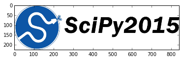
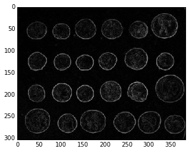

R 파이썬 소프트레이어 클라우드, xwMOOC
과학기술 파이썬 툴체인
학습 목표
- 과학기술 파이썬 툴체인을 이해한다.
- 과학기술 툴체인을 추상화한다.

참고: Keynote: State of the Tools, SciPy 2015, Jake VanderPlas
0. 파이썬
파이썬은 네덜란드 출신 귀도 반 로섬이 1991년 교육용으로 C 언어와 유닉스 셀을 간극을 줄이려고 개발되었다. 파이썬은 과학기술을 위한, 웹 개발을 위한, 이미지 처리를 위한, 언어는 아니다. 파이썬이 주목받고 많이 사용되는 이유는 실행속도(speed of execution)가 좋기 때문이 아니라, 개발속도(speed of development)가 충분히 빠르기 때문이다.
과거에는 컴퓨터 시간(machine time)이 중요했으나, 컴퓨터가 너무 많고 흔해져 버린 지금에 와서는 개발자 시간(human time)이 중요하고, 희소한 자원이 되었다. 파이썬은 기존에 개발된 C/포트란 언어로 수십년동안 개발되고 검증된 소프트웨어를 현재 목적에 맞춰 래퍼(wrapper) 언어로 과학기술 컴퓨팅에 지대한 역할을 수행했다.
파이썬이 과학기술 컴퓨팅의 C/포트란 언어로 개발된 소프트웨어를 래퍼 언어로 기능을 확대함과 동시에 선형대수 행렬 처리를 위해 작은 데이터는 Numeric, 큰 데이터는 Numarray로 각기 개발진행되어 가다 NumPy 팩키지로 통합되어 현재 모습에 이르고 있다.
매트랩에 영감을 받아 Multipack을 거쳐 SciPy로 행렬기반 매트랩과 같은 통합팩키지로 개발되었고, 매쓰매티카에 영감을 받아 IPython 노트북이 개발되었으며, 시각화를 위해 matplotlib이 개발되고, 행렬에서 처리 못하는 결측값처리 및 통계 R에서 기본 자료구조로 사용되는 데이터프레임을 지원하는 Pandas가 개발되었고, 기계학습에 맞춰 scikit-learn 팩키지가 순차적으로 기존 개발된 것에 덧붙여 개발되었다. 너무 많은 팩키지가 개발되어 개발환경 격리와 팩키지 관리를 위해 conda도 개발되었다.

1. 쉘, 래퍼, 코어 팩키지
1.1. 쉘: IPython, Jupyter
1.2. 래퍼 팩키지: Cython
1.3. 코어 팩키지: NumPy
2. 매트랩, 매쓰매티카, R, 시각화
2.1. 매트랩 : scipy 모듈
신호처리, 통계, 최적화, 선형대수 등 범용 과학 팩키지.
import scipy.stats 명령어로 통계 모듈을 가져온다.
import scipy.stats
# 평균 μ=0 와 표준편차 σ=1 인 표준정규분포에서 x=2.5 확률밀도를 계산한다.
scipy.stats.norm.pdf(2.5, 0, 1)0.01752830049356854import scipy.optimize 명령어로 최적화 모듈을 가져온다.
import scipy.optimize
# (x + 1) ^ 2 2차 함수 최소값을 구한다.
f = lambda x: (x + 1) ** 2
scipy.optimize.minimize_scalar(f)nit: 4
x: -1.0
nfev: 5
fun: 0.02.2. 매쓰매티카: sympy
sympy는 기호 수학(Symbolic Mathematics)을 위한 팩키지로 수식의 해답을 구하는데 기호로 표시하도록 한 파이썬 프로그램이다.
다양한 컴퓨터 대수 시스템이 존재하지만, 별도 언어를 학습할 필요없이 무료로 기존 파이썬언어로 가볍게 시작할 수 있는 장점이 sympy에 있다.
import sympy
# 보기 좋은 출력기능을 활성화한다.
sympy.init_printing()
# 변수, x를 정의한다.
x = sympy.symbols('x')
# x 대한 적분을 정의한다.
a = sympy.Integral(sympy.cos(x) * sympy.exp(x), x)
# 적분값을 계산한다.
sympy.Eq(a, a.doit())$\int e^{x} \cos{\left (x \right )}\, dx = \frac{e^{x}}{2} \sin{\left (x \right )} + \frac{e^{x}}{2} \cos{\left (x \right )}$
3. 기계학습, 빅데이터, 베이지언, 네트워크, 이미지
3.1. 기계학습: scikit-learn
파이썬 기계학습(machine learning) 팩키지로 데이터 마이닝과 자료분석 도구다. NumPy, SciPy, matplotlib 을 기반하여 위에 쌓아올렸다.
- 분류: SVM, random forest, nearest neighbors, …
- 회귀분석 : SVR, Ridge regression, Lasso, …
- 군집분석 : K-Means, spectral clustering, mean-shift, …
- 차원축소 : PCA, feature selection, non-negative matrix factorization
- 모형선택 : grid search, cross validation, metrics
- 전처리 : preprocessing, feature extraction
- …
from sklearn import datasets
from sklearn import svm
# digits 데이서셋을 가져온다.
digits = datasets.load_digits()
# Create a support vector machine classifier and fit it to the digits data
clf = svm.SVC(gamma=0.001, C=100.)
clf.fit(digits.data[:-1], digits.target[:-1])
# Classify one of the digits
print("True digit: " + str(digits.target[-1]))
print("Prediction: " + str(int(clf.predict(digits.data[-1]))))True digit: 8
Prediction: 83.2. pillow
파이썬 이미지 처리 라이브러리로 이미지 변환(imaging transformation)에 초점을 맞췄다. 기존 PIL를 포크떠서 파이썬 3 버젼을 지원하고 GitHub을 통해 공개되고 트래비스로 지속적 통합(CI) 방식으로 출시되고 있다.
%matplotlib inline
import matplotlib.pyplot as plt
import numpy as np
from PIL import Image
im = Image.open("scipy.png")
plt.imshow(np.asarray(im))<matplotlib.image.AxesImage at 0x109f77438>
3.3. scikit-image
scikit-image은 이미지 처리(image processing)에 초점을 맞췄다.
from skimage import data, io, filters
# Load the data (can be any NumPy array)
image = data.coins()
# Find the edges
edges = filters.sobel(image)
# Display the result
io.imshow(edges)<matplotlib.image.AxesImage at 0x10b458cc0>
3.3. bokeh
bokeh는 웹기반 인터랙티브 시각화 팩키지다.
from bokeh.plotting import figure, output_notebook, show
# output to ipython notebook
output_notebook()
# create a new plot with a title and axis labels
p = figure(title="simple line example", x_axis_label='x', y_axis_label='y')
# add a line renderer with legend and line thickness
p.line([1, 2, 3, 4, 5], [6, 7, 2, 4, 5], legend="Temp.", line_width=2)
# show the results
show(p)3.4. statsmodels
statsmodels은 통계 팩키지(statistical modeling package)다.
import numpy as np
import statsmodels.api as sm
# 설명변수 2개와 상수항을 갖는 가상 데이터를 생성한다.
nobs = 100
X = np.random.random((nobs, 2))
X = sm.add_constant(X)
beta = [1, .1, .5]
e = np.random.random(nobs)
y = np.dot(X, beta) + e
# 회귀 모형을 적합한다.
results = sm.OLS(y, X).fit()
# 결과를 검사한다.
results.summary()statsmodels에서 지원하는 모형은 대략 다음과 같다. 좀더 자세한 사항은 현재 개발 버젼 0.7.0 사이트를 참조한다.
- Linear regression models
- Generalized linear models
- Discrete choice models
- Robust linear models
- Many models and functions for time series analysis
- Nonparametric estimators
- A wide range of statistical tests
- Many more models and extensions in development
import numpy as np
import statsmodels.api as sm
import statsmodels.formula.api as smf
# 데이터를 적재한다.
dat = sm.datasets.get_rdataset("Guerry", "HistData").data
# (설명변수 중 하나에 자연로그 변환을 취하고) 회귀모형을 적합시킨다.
results = smf.ols('Lottery ~ Literacy + np.log(Pop1831)', data=dat).fit()
# 결과를 검사한다.
results.summary()유용한 파이썬 팩키지
- numba: 파이썬 프로그램 속도와 성능을 향상하도록 간판방식(JIT, Just-In-Time) 컴퍼일러다.
- cython: 파이썬 프로그램을 컴파일해서 C 프로그램으로 만는다.
- geopandas: PostGIS의 대안으로 파이썬에서 지리정보(GIS) 처리를 지원한다.
- astropy: 천문학을 위한 파이썬 도구.
파이썬이 지원하는 파일형식
- CSV
- 자체 내장
- HDF5
- NetCDF
- JSON
- 자체 내장
- XML
- GIS (GeoJSON 등) *Fiona